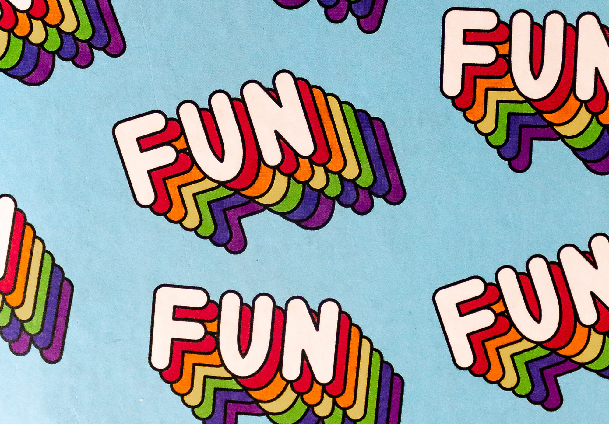

後臺管理系統 - 最新消息
新增新聞
資料列數：
5
10
30
50
100
1
/
XX
頁
前往
圖片
標題
內容
連結
功能

海洋保育
今日，一個由海洋保育組織主辦的活動在沿海地區舉行，旨在提高公眾對海洋保護的意識。志願者們進行了海灘清潔行動，清理了許多塑料垃圾和其他污染物。同時....
JJJJJJJJJJJJJJJJJJJJJJJJJJJ
修改
刪除
重新載入JSON
資 料 更 新
新聞標題：
符合條件
格式不符合條件
連結：
符合條件
格式不符合條件
新聞圖片地址：
符合條件
格式不符合條件
新聞內容：
符合條件
格式不符合條件